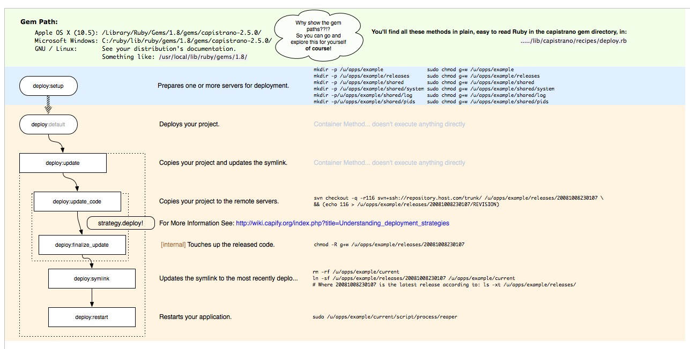

| space, → | next slide |
| ← | previous slide |
| d | debug mode |
| ## <ret> | go to slide # |
| c | table of contents (vi) |
| f | toggle footer |
| r | reload slides |
| z | toggle help (this) |
list main points of talk
$gem install capistrano
Successfully installed capistrano-2.5.19
1 gem installed
Installing ri documentation for capistrano-2.5.19...
Installing RDoc documentation for capistrano-2.5.19...$capify ./
[add] writing ./Capfile'
[add] writing./config/deploy.rb'
[done] capified!
set :application, 'foo' # system
set :user, 'bar' # system
set :rake, '/opt/ree/bin/rake' # system
set :web_root, '/var/www' # system
set :staging_server, 'tacquito.foobar.com' # arbitrary
set :production_server, 'chalupa.foobar.com' # arbitrary
set :scm, :git # system
set :repository, "git@git.foobar.com:#{application}.git" # system
branch = Capistrano::CLI.ui.ask("Deploy branch ('master' is default): ")
branch = 'master' if branch.empty?
set :branch, branch # system
role :app, 'www.foobar.com' role :web, 'www.foobar.com' role :db, 'www.foobar.com'
server 'www.foobar.com', :app, :web, :db
$ cap -T
desc "List Remote Web Root" task :list_web_root, :roles => :web do run "ls -la /var/www" end
set :use_sudo, false
set :deploy_to, "#{web_root}/#{user}/#{application}"
set :deploy_via, :remote_cache
# cap deploy:update # cap deploy:symlink # cap deploy:restart
# cap deploy:setup # cap deploy:check

before 'deploy', 'deploy:check' before 'deploy', 'deploy:web:disable' after 'deploy:update_code', 'bundler:bundle_install' after 'deploy:update_code', 'app_setup' if run_app_setup after 'deploy:update_code', 'db_migrate' after 'deploy:symlink', 'clear_cache' after 'deploy', 'deploy:web:enable'
$gem install bundler
Successfully installed bundler-1.0.3
1 gem installed
Installing ri documentation for bundler-1.0.3...
Installing RDoc documentation for bundler-1.0.3...source 'http://rubygems.org' gem 'rails', '= 3.0.1' gem 'pg', '~> 0.9.0' gem 'exception_notification', :git => 'http://github.com/rails/exception_notification.git' gem 'will_paginate', :path => 'vendor/rails' # custom version of gem gem 'nokogiri', :platforms => [:mri_18, :jruby] group :development, :test do gem 'redgreen' gem 'silent-postgres' gem 'ruby-debug' gem 'rspec-rails', '~> 2.0.1' end
$bundle install
Using rake (0.8.7)
Using abstract (1.0.0)
Using activesupport (3.0.1)
...
Your bundle is complete! It was installed into /Users/foo/.rvm/gems/ree-1.8.7-2010.02@bar
require 'bundler/capistrano'